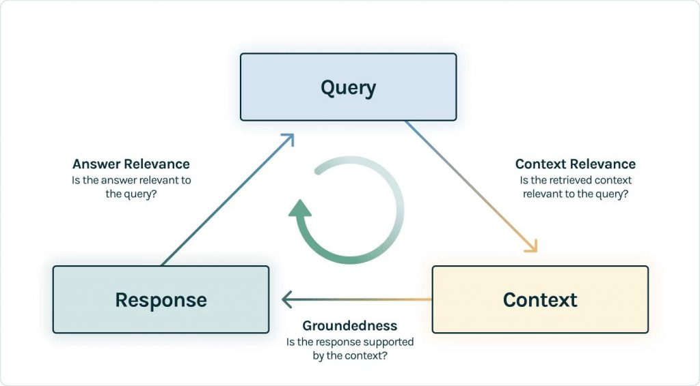

## Library to load the PDF
%pip install --upgrade --quiet install pypdf
## Library for chunking
%pip install --upgrade --quiet tiktoken
%pip install --upgrade --quiet nltk
## Library for the embedding
%pip install --upgrade --quiet gpt4all
%pip install --upgrade --quiet sentence-transformers
## Library to store the embeddng in a vector DB
%pip install --upgrade --quiet chromadb
## Library for the LLM interaction
%pip install --upgrade --quiet install langchain
%pip install --upgrade --quiet langchain-community
## Library to save the results in a word document
%pip install --upgrade --quiet python-docx
## Library to evaluate the RAG process
%pip install --upgrade --quiet datasets
%pip install --upgrade --quiet ragas
## Library to save evaluation dataset in excel
%pip install --upgrade --quiet panda
%pip install --upgrade --quiet openpyxl
%pip install --upgrade --quiet plotlyGenerating and Improving Evaluation Report “Brief”
Evaluating AI Usage for Evaluation Purpose
“We are drowning in information, while starving for wisdom. The world henceforth will be run by synthesizers, people able to put together the right information at the right time, think critically about it, and make important choices wisely.” - Edward Osborne Wilson
Executive Summary
Artificial Inteligence (AI) is presented as the potential trigger for the fifth wave of the evidence revolution (following the 4 previous ones: 1.Outcome Monitoring, 2.Impact Evaluation, 3.Systematic Reviews and 4.Knowledge Brokering). This actually reflects a situation where considering the numbers of published evaluation reports across the UN system, information retrieval and evidence generalization challenges have arisen: How to extract the most relevant findings and recommendations from within a specific context and to reuse and re-inject them in a different but appropriate context?
The key deliverable from an evaluation process is usually a long report (often over 60 pages PDF file). From this report, two-pagers executive “briefs” are usually designed for the consumption of the senior executive audience. Striking the balance between breadth and depth is a common challenge for evaluations but what remains even more challenging is the subjective dimension involved in choosing what to include and what to exclude.Highlighting critical aspects while deciding on what are the less relevant details to omit rely on expert judgement and human bias… The potential fear of being, like Cassandra in the greek mythology, the bearer of bad news comes with the structural risk of “cushioning” the real evaluation findings to a point where they get hidden. Relying on automated retrieval can therefore help improving the objectivity and independence of the evaluation report summarization.
Retrieval-augmented generation (RAG) is an AI Question-Answering framework that surfaced in 2020 and that synergizes the capabilities of Large Language Model (LLMs) and information retrieval systems from specific domain of expertise (here from “evaluation reports”). This paper is presenting the challenges and opportunities associated with those new approaches in the context of public program evaluation.
First, we explain how to create an initial two-pagers evaluation brief using an orchestration of functions and models from Hugging Face Hub. Rather than relying on ad-hoc user interactions through a black-box point & click chat interface, a relevant alternative is to use a data science approach with documented and reproducible scripts that can directly output a word document. The same approach could actually be applied to other textual analysis needs, for instance: extracting causal chains from the transcriptions of Focus Group Discussions, generating potential theories of change from needs assessment reports or assessing sufficient usage of programmatic evidence when developing Operation Strategic Plan.
Second, we review the techniques that can be used to evaluate the performance of summarisation scripts both to optimize them but also to minimize the risk of AI hallucinations. We generate a second alternative brief, and then create an evaluation dataset to explore the different metrics that can be used to evaluate information retrieval process.
Last we discuss how such approach can actually inform decisions and strategies for an efficient AI deployment: While improving RAG pipeline is the first important step, creating training dataset with human-in-the-loop would allow to fine-tuned models and further increase the whole performance and reliability of evidence retrieval and re-injection processes.
A short presentation is also available here
Introduction
Building a robust information retrieval system requires to configure different components:
A Retrieval & Generation Pipeline: Build a knowledge base and configure how to retrieve the information from it then define efficient prompt to query the system;
A Continuous Evaluation Process: Explore and combine various options for both Retrieval and Generation to compare the results.
A Production Deployment Strategy: Organise AI-ready feedback and prepare data for fine-tuning.
This paper compiles the results of experimentation applied to a practical use case. It includes a cookbook with reproducible recipes so that colleagues can rerun and learn from it. It also contains broader suggestions on the usage of AI for public programme evaluations.
Most of the content in this document targets a technical audience that may consider including such techniques within their personal information management toolkit, and this working safely, fully offline on their own computer. We used here the 2019 Evaluation of UNHCR’s data use and information management approaches to illustrate the process. Readers shall be able adjust this tutorial to their own use cases and are welcome to ask questions through a ticket in this repository!
Environment Set up
The world of LLMs is a Python one. The scripts below are based on langChain python module but the same pipeline could also be built with another LLM orchestration module like LlamaIndex
Make sure to install the last version of python and create a dedicated python environment to have a fresh install where to manage correctly all the dependencies between packages. This can be done with conda python modules management utility.
First directly in your OS Shell, create a new environment - here called evalenv
conda create –name evalenv python=3.11
Then activate it! Et voila!
conda activate evalenv
Once this environment selected as a kernel to run the notebook, we can install the required python modules for RAG:
# then Restart the jupyter kernel for this notebook
%reset -fRetrieval & Generation Pipeline
The illustration from HuggingFace RAG Evaluation below nicely visualize the first two elements of the system architecture: retrieval (that includes: chunking, embedding, storing and retrieving) and generation (that includes prompting an LLM).

Information Retrieval
Load the PDF
There plenty of potential python packages to load pdf files… More details here. Note that more loader also exist for other type of data!!!
from langchain_community.document_loaders import PyPDFLoader
loader = PyPDFLoader("files/Info_Mngt_eval_2019.pdf")
docs = loader.load_and_split()Chunking
If you have a large document, because of memory management, you will not be able to process it in one chunk. LangChain offers several built-in text splitters to divide text into smaller chunks based on different criteria.
Example of options that can be tested are:
Simple character-level processing with
CharacterTextSplitter,Recursive Splitting with
RecursiveCharacterTextSplitter,Words or semantic units with
TokenTextSplitter,Context-aware splitting with
NLTKTextSplitter.
See example to understand how chunking works, see this online viz.
from langchain.text_splitter import CharacterTextSplitter
splitter_text = CharacterTextSplitter(
chunk_size=1000,
chunk_overlap=200
)
chunks_text = splitter_text.split_documents(docs)from langchain.text_splitter import RecursiveCharacterTextSplitter
splitter_recursivecharactertext = RecursiveCharacterTextSplitter(
chunk_size=1000,
chunk_overlap=200,
add_start_index=True,
separators=["\n\n", "\n", ".", " ", ""],
)
chunks_recursivecharactertext = splitter_recursivecharactertext.split_documents(docs)from langchain.text_splitter import TokenTextSplitter
splitter_tokentext = TokenTextSplitter(
chunk_size=1000,
chunk_overlap=200
)
chunks_tokentext = splitter_tokentext.split_documents(docs)from langchain_text_splitters import NLTKTextSplitter
splitter_nltktext = NLTKTextSplitter(chunk_size=1000)
chunks_nltktext = splitter_nltktext.split_documents(docs)Instantiate a Vector Database and Generate Embedding
A vector database is a database that allows to efficiently store and query embeddings. Embedding are actually a numeric representation of text data. This conversion from text to numeric is used to represent words, sentences, or even entire documents in a compact and meaningful way. It captures the essence of a word’s meaning, context, and relationships with other words.
Vector databases extend the capabilities of traditional relational databases to embedding. However, the key distinguishing feature of a vector database is that query results aren’t an exact match to the query. Instead, using a specified similarity metric, the vector database returns data that are similar to a query.
There are here again numerous options in terms of Open Source vector DB that can be used - for instance: ChromaDB, Qdrant, Milvus or FAISS. Here we will just use Chroma.
from langchain_community.vectorstores import Chroma
import chromadb
chroma_client = chromadb.PersistentClient(path="persist/")
## A collection is created with the following
#chroma_collection = chroma_client.create_collection('collection')To generate embedding, we need a dedicated model and there’s no single “best” option to select it. Words with similar contexts tend to have closer vector representations. Some static word embeddings models are good capturing basic semantic relationships and are computationally efficient and fast but might not capture complex semantics or context-dependent meanings. Contextual Embeddings models have been developped to capture word meaning based on context, considering surrounding words in a sentence and handling ambiguity. But Training and usage can be computationally expensive, model sizes can be large.
Here we start with testing with GPT4ALL
from langchain_community.embeddings import GPT4AllEmbeddings
embeddings_bert = GPT4AllEmbeddings()Now we can store the embeddings and associated metadata in the chroma vector database using a specific collection name. Below we create distinct stores for each chunking options.
vectorstore_text_bert = Chroma.from_documents(
documents=chunks_text,
embedding=embeddings_bert,
collection_name= "text_bert",
persist_directory = "persist")vectorstore_recursivecharactertext_bert = Chroma.from_documents(
documents=chunks_recursivecharactertext,
embedding=embeddings_bert,
collection_name= "recursivecharactertext_bert",
persist_directory = "persist")vectorstore_tokentext_bert = Chroma.from_documents(
documents=chunks_tokentext,
embedding=embeddings_bert,
collection_name= "tokentext_bert",
persist_directory = "persist")vectorstore_nltktext_bert = Chroma.from_documents(
documents=chunks_nltktext,
embedding=embeddings_bert,
collection_name= "nltktext_bert",
persist_directory = "persist")Retrieve embeddings from persistent storage
We can re-open a previous database using its folder path:
import chromadb
client = chromadb.PersistentClient(path="persist/")Then we can get the name of collection available within that database
collections = client.list_collections()
print(collections)and get a previously saved vector collection
vectorstore_text_bert = Chroma(collection_name="text_bert",
persist_directory="persist/",
embedding_function=embeddings_bert) Content Generation
Set up a local LLM
If do not have access to a LLM API, an alternative is to install a local one and there are again plenty of Foundation LLM options to select from. Foundation models are AI neural networks trained on massive amounts of raw data (usually with unsupervised learning) that can be adapted to a wide variety of tasks.
Note
Open-source Large Language Models (LLM) have multiple advantages:
Cost Savings: generally more affordable in the long run as they don’t involve licensing fees, once infrastructure is setup and/or can be used offline on local computer. More insights on total cost of Owernership can be gained here. One element is also that most of the open source model have comparatively a lot less parameters (3b to 70b) than the large GPT ones (over 150b) which directly impact on infererence costs, i.e. computing cost to generate an answer.
Data Protection: allow to use within the data enclave of your own computer without any data being sent to a remote server.
Transparency and Flexibility: accessible to the public, allowing developers to inspect, modify, and distribute the code. This transparency fosters a community-driven development process, leading to rapid innovation and diverse applications.
Added Features and Community Contributions: can leverage multiple providers and internal teams for updates and support, which enables to stay at the forefront of technology and exercise greater control over their usage.
Customizability: allow for added features and benefit from community contributions. They are ideal for projects that require customization and those where budget constraints are a primary concern.
There are multiple options to do that. An easy one is to install OLLAMA, which offers a wide variety of open models from the “AI Race” competitors arena: LLama3 from Facebook, gemma from Google, phi3 Microsoft but also qwen from the Chinese AliBaba, falcon from the Emirati Technology Innovation Institute, or Mixtral from the french startup Mistral_AI. Langchain as dedicated module to work with ollama.
Below, we start with Mixtral Sparse Mixture-of-Expert, and specifically the quantized version: 8x7b-instruct-v0.1-q4_K_M, an open-weight model designed to optimize performance-to-cost ratio, aka small in size to run on a strong laptop but good in performance. This download a file with the model which size around 26Gb.
from langchain_community.chat_models import ChatOllama
ollama_mixtral = ChatOllama(
model="mixtral:8x7b-instruct-v0.1-q4_K_M",
temperature=0.2,
request_timeout=500
)The temperature is setting the creativeness of the response - the higher the more creative - below we will remain conservative! It is the equivalent of the conversation style setting in copilot: creative [1-0.7], balanced ]0.7-0.4], precise ]0.4,0]…
Summarisation Prompt
A prompt is is a piece of text or a set of instructions, used by the LLM to generate a response or perform a task. Writing a good summarization prompt involves a few key steps:
Be Specific: Clearly state what you want to summarize. For example, “Summarize this Operation Strategic Plan in 200 words using abstractive summarization” or “Provide a summary of this needs assessment report, highlighting its key takeaways”.
Define the Scope: Specify the length or depth of the summary you need. For instance, “Summarize this text into two paragraphs with simple language to make it easier to understand” or “Create a summary of this report by summarizing all chapters separately and then generating an overall summary of the report”.
Set the Context: If the summary is for a specific purpose or audience, mention it in the prompt. For example, “I need to write talking points based on this report. Help me summarize this text for better understanding so that I can use it as an introduction emai” or “Summarize this for me like I’m 8 years old”.
Use Clear and Concise Language: Avoid unnecessary complexity or ambiguity. A good prompt should provide enough direction to start but leave room for creativity.
Here we will try to create a prompt that generate an “Evaluation Brief” from the larger evaluation report.
Mixtral comes with specific tags to use for the prompt:
<s>\[INST\] Instruction \[/INST\] Model answer</s>\[INST\] Follow-up instruction \[/INST\]
RAG_prompt = """
<s>
[INST]Act if you were a public program evaluation expert working for UNHCR.
Your audience target is composed of Senior Executives that are managing the operation or program that got evaluated.[/INST]
Your task is to generate an executive summary of the report you just ingested.
</s>
[INST]
The summary should follow the following defined structure:
- In the first part titled "What have we learn?", start with a description of the Forcibly Displaced population in the operation and include as 5 bullet points, the main challenges in relation with the evaluation objectives that have been identified in the document.
For each challenge explain why it's a problem and give a practical example to illustrate the consequence of this problem.
- In a second part titled: "How did we get there?" try to review the common root causes for all the challenges that have been identified.
- In a third part, title: "What is working well?", provide a summary of the main success and achievement, i.e. things that have been identified as good practices and / or effective by the evaluators.
- In the fourth part: "Now What to do?", include and summarize the recommendations proposed by the evaluation. Classify the recommendations according to their relevant level:
1. "Operational Level": i.e recommendations that need to be implemented in the field as an adaptation or change of current practices. Please flag clearly, if this is the case, the recommendations related to practice that should be stopped or discontinued;
2. "Organizational level": i.e recommendations that require changes in staffing or capacity building. Please flag clearly, if this is the case, the recommendations related to practice that should be stopped or discontinued;
3. "Strategic Level": i.e recommendations that require a change in existing policy and rules.
- At the end, for the "Conclusion", craft a reflective conclusion in one sentence that highlights the broader significance of the discussed topic.
[/INST]
"""Set up the Retriever
A retriever acts as an information gatekeeper in the RAG architecture. Its primary function is to search through a large corpus of data to find relevant pieces of information that can be used for text generation. You can think of it as a specialized librarian who knows exactly which ‘books’ to pull off the ‘shelves’ when you ask a question. In other words, the retriever first fetches relevant parts of the document pertaining to the user query, and then the Large Language Model (LLM) uses this information to generate a response.
The search_type argument within vectorstore.as_retriever for LangChain allows you to specify the retrieval strategy used to find relevant documents in your vector store. Different options are available:
If you simply want the most relevant documents, “similarity” (default): This is the most common search type and is used by default. It performs a standard nearest neighbor search based on vector similarity. The retriever searches for documents in the vector store whose vector representations are closest to the query vector. Documents with higher similarity scores are considered more relevant and are returned first.
If you need diverse results that cover different aspects of a topic, “mmr” (Maximum Marginal Relevance): This search type focuses on retrieving documents that are both relevant to the query and diverse from each other. It aims to avoid redundancy in the results. MMR is particularly useful when you want a collection of documents that cover different aspects of a topic, rather than just multiple copies of the most similar document.
If you want to ensure a minimum level of relevance,“similarity_score_threshold”: This search type retrieves documents based on a similarity score threshold. It only returns documents that have a similarity score above the specified threshold. This allows you to filter out documents with low relevance to the query.
The retriever also takes a series of potential parameters. The search_kwargs={"k": 2,"score_threshold":0.8} argument is a dictionary used to configure how documents are retrieved during the search process. This argument lets you control how many results you get (up to two in this case) and how good those results need to be (with a score of at least 0.8):
k (int): This parameter controls the number of documents to retrieve from the search. In this case, k: 2 specifies that the retriever should return up to two documents that match the search query.
score_threshold (float): This parameter sets a minimum score threshold for retrieved documents. Documents with a score lower than 0.8 will be excluded from the results. This essentially acts as a quality filter, ensuring a certain level of relevance between the query and retrieved documents.
The scoring mechanism used by the retriever might depend on the specific retriever implementation. It’s likely based on how well the retrieved documents match the search query. The effectiveness of these parameters depends on your specific use case and the quality of the underlying retrieval system.
Even with “similarity”, the retrieved documents might have varying degrees of relevance. Consider using ranking techniques within LangChain to further refine the results based on additional criteria. The underlying vector store might have limitations on the supported search types. Always refer to the documentation of your specific vector store to confirm available options.
We can build multiple retrievers out of the same vectorstore:
ragRetriever_text_bert = vectorstore_text_bert.as_retriever()ragRetriever_recursivecharactertext_bert = vectorstore_recursivecharactertext_bert.as_retriever()ragRetriever_similarity_tokentext_bert = vectorstore_tokentext_bert.as_retriever(
search_type="similarity_score_threshold",
search_kwargs={
"k": 3,
"score_threshold": 0.4,
},
)ragRetriever_similarity_nltktext_bert = vectorstore_nltktext_bert.as_retriever(
search_type="similarity_score_threshold",
search_kwargs={
"k": 5,
"score_threshold": 0.8,
},
)Build the Chain
A retrieval question-answer chain act as a pipe: it takes an incoming question, look up relevant documents using a retriever, then pass those documents along with the original question into an LLM and return the answer the original question.
from langchain_core.prompts import ChatPromptTemplate
prompt_retrieval = ChatPromptTemplate.from_template(
"""Answer the following question based only on the provided context:
<context>
{context}
</context>
Question: {input}"""
)and last the retrieval chain!
from langchain.chains.combine_documents import create_stuff_documents_chain
from langchain.chains import create_retrieval_chain
combine_docs_chain_mixtral = create_stuff_documents_chain(
ollama_mixtral ,
prompt_retrieval
)
qa_chain = create_retrieval_chain(
ragRetriever_recursivecharactertext_bert,
combine_docs_chain_mixtral
)Note that from this stage, the following steps may take time to run - this will be highly dependent on the power of your computer - obviously the availability of GPUs - Graphical Processing Unit - will significantly increase the speed! FYI, this notebook was built on a Thinkpad P53 with a Quadro T1000 GPU.
response_text_bert = qa_chain.invoke({"input": RAG_prompt}) Save in a word document
To complete the process, let’s save the result directly within a word document! This again can be automated as below:
import docx
# Create a document
doc = docx.Document()
# add a heading of level 0 (largest heading)
doc.add_heading('Evaluation Brief', 0)
# Add another paragraph
p = doc.add_paragraph()
# Add a run with the summary and format it
run = p.add_run(response_text_bert["answer"])
run.font.name = 'Arial'
run.font.size = docx.shared.Pt(12)
## Add a disclaimer... ----------------
# add a page break to start a new page
doc.add_page_break()
# add a heading of level 2
doc.add_heading('DISCLAIMER:', 2)
doc_para = doc.add_paragraph()
doc_para.add_run('This document contains material generated by artificial intelligence technology. While efforts have been made to ensure accuracy, please be aware that AI-generated content may not always fully represent the intent or expertise of human-authored material and may contain errors or inaccuracies. An AI model might generate content that sounds plausible but that is either factually incorrect or unrelated to the given context. These unexpected outcomes, also called AI hallucinations, can stem from biases, lack of real-world understanding, or limitations in training data.').italic = True
# Save the document ---------------
doc.save("generated/Evaluation_Brief_response_text_bert.docx")Continuous Evaluation Process
We were able to get a first brief… still how can we assess how good is this report?
Build an alternate “Brief”
Let’s try to generate a second report with different settings.
LangChain often integrates with libraries like Hugging Face Transformers for embedding usage. Best is to experiment with different embeddings to see what works best for a specific use case and dataset. There are plenty of options also depending on the languages.
Let’s try first with a second embedding model… Hugging face has many options… and there is even a leaderboard to see how they compete… We will select here the embedding model bge-large-en-v1.5 from the Beijing Academy of Artificial Intelligence. It is small in size but efficient and it does not consume too much memory.
from langchain_community.embeddings import HuggingFaceBgeEmbeddings
embeddings_bge= HuggingFaceBgeEmbeddings(
model_name="BAAI/bge-small-en",
model_kwargs={"device": "cpu"},
encode_kwargs={"normalize_embeddings": True}
)We build the vector store using the new embedding…
# Disable TOKENIZERS warning
import os
os.environ["TOKENIZERS_PARALLELISM"] = "false"vectorstore_recursivecharactertext_bge = Chroma.from_documents(chunks_recursivecharactertext,
embeddings_bge,
collection_name= "recursivecharactertext_bge",
persist_directory = "persist" )…create a different retriever now using Maximum Marginal Relevance…
ragRetriever_mmr_recursivecharactertext_bge = vectorstore_recursivecharactertext_bge.as_retriever(
search_type="mmr"
)Advance retrieving strategies can also be used. For instance, using ParentDocumentRetriever a document can be embedded into small chunks, and then the context that “surrounds” the found context -child documents - is retrieved using Dense Vector Retrieval, child documents are merged based on their parents. If they have the same parents – they become merged and the child documents with their respective parent documents are replace from an in-memory-store and the parent documents get used to augment generation.
from langchain.retrievers import ParentDocumentRetriever
from langchain.storage import InMemoryStore
# parent_splitter = RecursiveCharacterTextSplitter(chunk_size=1536)
# child_splitter = RecursiveCharacterTextSplitter(chunk_size=256)
# store = InMemoryStore()
# parent_document_retriever = ParentDocumentRetriever(
# vectorstore= vectorstore_nltktext_bert,
# docstore=store,
# child_splitter=child_splitter,
# parent_splitter=parent_splitter,
# )
# parent_document_retriever.add_documents(docs)Ensemble retrieval is another technique where a Retriever Pair is created ( with BM25 Sparse Vector Retrieval and with Dense Vector Retrieval Method), then retrieved docs are “fused” based on their weighting using the Reciprocal Rank Fusion algorithm into a single ranked list and the resulting documents is used to augment the generation.
from langchain.retrievers import BM25Retriever, EnsembleRetriever
# text_splitter = RecursiveCharacterTextSplitter(chunk_size=512, chunk_overlap=16)
# docs = text_splitter.split_documents(all_docs)
# bm25_retriever = BM25Retriever.from_documents(docs)
# bm25_retriever.k = 3
# vectorstore = Chroma.from_documents(docs, hf_bge_embeddings)
# chroma_retriever = vectorstore.as_retriever(search_kwargs={"k": 3})
# ensemble_retriever = EnsembleRetriever(
# retrievers=[bm25_retriever, chroma_retriever],
# # Relative weighting of each retriever needs to sums to 1!
# weights=[0.42, 0.58])and let’s use a different model for the LLM: command-r), and specifically the quantized version: command-r:35b-v0.1-q4_K_M, an open-weight model designed to optimize RAG.
from langchain_community.chat_models import ChatOllama
ollama_commandR = ChatOllama(
model="command-r:35b-v0.1-q4_K_M",
temperature=0.2,
request_timeout=500
)… and then get our summary with the second LLM!
from langchain.chains.combine_documents import create_stuff_documents_chain
from langchain.chains import create_retrieval_chain
combine_docs_chain_commandR = create_stuff_documents_chain(
ollama_commandR ,
prompt_retrieval
)
qa_chain = create_retrieval_chain(
ragRetriever_mmr_recursivecharactertext_bge,
combine_docs_chain_commandR
)
response_mmr_recursivecharactertext_bge = qa_chain.invoke({"input": RAG_prompt}) Now saving it in a word document!
import docx
# Create a document
doc = docx.Document()
# add a heading of level 0 (largest heading)
doc.add_heading('Evaluation Brief', 0)
# Add another paragraph
p = doc.add_paragraph()
# Add a run with the summary and format it
run = p.add_run(response_mmr_recursivecharactertext_bge["answer"])
run.font.name = 'Arial'
run.font.size = docx.shared.Pt(12)
## Add a disclaimer... ----------------
# add a page break to start a new page
doc.add_page_break()
# add a heading of level 2
doc.add_heading('DISCLAIMER:', 2)
doc_para = doc.add_paragraph()
doc_para.add_run('This document contains material generated by artificial intelligence technology. While efforts have been made to ensure accuracy, please be aware that AI-generated content may not always fully represent the intent or expertise of human-authored material and may contain errors or inaccuracies. An AI model might generate content that sounds plausible but that is either factually incorrect or unrelated to the given context. These unexpected outcomes, also called AI hallucinations, can stem from biases, lack of real-world understanding, or limitations in training data.').italic = True
# Save the document ---------------
doc.save("generated/Evaluation_Brief_response_mmr_recursivecharactertext_bge.docx")Et voila! Though When reading the two briefs, #1 & #2, we can see significant differences… which is OK as it would be if it was a human doing it.. Though, it is likely that one report is better than the other. Now let’s evaluate the quality of the summarization to objectively find out about this!
Generating an evaluation dataset
To do the evaluation, first we need to build an large-enough evaluation dataset so that the evaluation is based on multiple output. We need to build the following data
question: list[str] - These are the questions the RAG pipeline will be evaluated on.
contexts: list[list[str]] - The contexts which were retrieved and passed into the LLM corresponding to each question. This is a list[list] since each question can retrieve multiple text chunks.
answer: list[str] - The answer that got generated from the RAG pipeline.
One approach is to extract from the report both:
all findings and evidence, i.e. what can be learnt from the specific context of this evaluation study, what are the root causes for the finding in this context and what are the main risks and difficulties in this context.
all recommendations, flagging clearly if the recommendations relate to practices that should be either discontinued on one side or on the other side to practices that should be scaled up and of if they comes with resource allocation requirement.
To provide more perspectives for the extraction, the report can be reviewed from the angle of each of the potential 26 different type of experts that may look at UNHCR programme:
4 experts for Strategic Impact Peer Review: i.e., finding or recommendations that require a change in existing policy and regulations in relation within the specific impact area:
- Attaining favorable protection environments
- Realizing rights in safe environments
- Empowering communities and achieving gender equality
- Securing durable solutions
17 experts for Operational Outcome Peer Review: i.e., finding or recommendations that require a change that needs to be implemented in the field as an adaptation or change of current activities in relation within the specific outcome area:
- Access to territory registration and documentation
- Status determination
- Protection policy and law
- Gender-based violence
- Child protection
- Safety and access to justice
- Community engagement and women’s empowerment
- Well-being and basic needs
- Sustainable housing and settlements
- Healthy lives
- Education
- Clean water sanitation and hygiene
- Self-reliance, Economic inclusion, and livelihoods
- Voluntary repatriation and sustainable reintegration
- Resettlement and complementary pathways
- Local integration and other local solutions
5 experts on Organizational Enabler Peer Review: i.e., finding or recommendations that require changes in management practices, technical approach, business processes, staffing allocation or capacity building in relation with:
- Systems and processes
- Operational support and supply chain
- People and culture
- External engagement and resource mobilization
- Leadership and governance
First let’s set up the prompt questions
# Define the list of experts on impact - outcome - organisation
q_experts = [
"<s> [INST] Instructions: Act as a public program evaluation expert working for UNHCR. Your specific area of expertise and focus is strictly on the Strategic Impact: ---Attaining favorable protection environments---: i.e., finding or recommendations that require a change in existing policy and regulations. [/INST]",
"<s> [INST] Instructions: Act as a public program evaluation expert working for UNHCR. Your specific area of expertise and focus is strictly on the Strategic Impact: ---Realizing rights in safe environments---: i.e., finding or recommendations that require a change in existing policy and regulations. [/INST]",
"<s> [INST] Instructions: Act as a public program evaluation expert working for UNHCR. Your specific area of expertise and focus is strictly on the Strategic Impact: ---Empowering communities and achieving gender equality--- : i.e., finding or recommendations that require a change in existing policy and regulations. [/INST]",
"<s> [INST] Instructions: Act as a public program evaluation expert working for UNHCR. Your specific area of expertise and focus is strictly on the Strategic Impact: ---Securing durable solutions--- : i.e., finding or recommendations that require a change in existing policy and regulations. [/INST]",
"<s> [INST] Instructions: Act as a public program evaluation expert working for UNHCR. Your specific area of expertise and focus is strictly on the specific Operational Outcome: ---Access to territory registration and documentation ---, i.e. finding or recommendations that require a change that needs to be implemented in the field as an adaptation or change of current activities. [/INST]",
"<s> [INST] Instructions: Act as a public program evaluation expert working for UNHCR. Your specific area of expertise and focus is strictly on the specific Operational Outcome: --- Status determination ---, i.e. finding or recommendations that require a change that needs to be implemented in the field as an adaptation or change of current activities. [/INST]",
"<s> [INST] Instructions: Act as a public program evaluation expert working for UNHCR. Your specific area of expertise and focus is strictly on the specific Operational Outcome: --- Protection policy and law---, i.e. finding or recommendations that require a change that needs to be implemented in the field as an adaptation or change of current activities. [/INST]",
"<s> [INST] Instructions: Act as a public program evaluation expert working for UNHCR. Your specific area of expertise and focus is strictly on the specific Operational Outcome: --- Gender-based violence ---, i.e. finding or recommendations that require a change that needs to be implemented in the field as an adaptation or change of current activities. [/INST]",
"<s> [INST] Instructions: Act as a public program evaluation expert working for UNHCR. Your specific area of expertise and focus is strictly on the specific Operational Outcome: --- Child protection ---, i.e. finding or recommendations that require a change that needs to be implemented in the field as an adaptation or change of current activities. [/INST]",
"<s> [INST] Instructions: Act as a public program evaluation expert working for UNHCR. Your specific area of expertise and focus is strictly on the specific Operational Outcome: --- Safety and access to justice ---, i.e. finding or recommendations that require a change that needs to be implemented in the field as an adaptation or change of current activities. [/INST]",
"<s> [INST] Instructions: Act as a public program evaluation expert working for UNHCR. Your specific area of expertise and focus is strictly on the specific Operational Outcome: --- Community engagement and women's empowerment ---, i.e. finding or recommendations that require a change that needs to be implemented in the field as an adaptation or change of current activities. [/INST]",
"<s> [INST] Instructions: Act as a public program evaluation expert working for UNHCR. Your specific area of expertise and focus is strictly on the specific Operational Outcome: --- Well-being and basic needs ---, i.e. finding or recommendations that require a change that needs to be implemented in the field as an adaptation or change of current activities. [/INST]",
"<s> [INST] Instructions: Act as a public program evaluation expert working for UNHCR. Your specific area of expertise and focus is strictly on the specific Operational Outcome: --- Sustainable housing and settlements ---, i.e. finding or recommendations that require a change that needs to be implemented in the field as an adaptation or change of current activities. [/INST]",
"<s> [INST] Instructions: Act as a public program evaluation expert working for UNHCR. Your specific area of expertise and focus is strictly on the specific Operational Outcome: --- Healthy lives---, i.e. finding or recommendations that require a change that needs to be implemented in the field as an adaptation or change of current activities. [/INST]",
"<s> [INST] Instructions: Act as a public program evaluation expert working for UNHCR. Your specific area of expertise and focus is strictly on the specific Operational Outcome: --- Education ---, i.e. finding or recommendations that require a change that needs to be implemented in the field as an adaptation or change of current activities. [/INST]",
"<s> [INST] Instructions: Act as a public program evaluation expert working for UNHCR. Your specific area of expertise and focus is strictly on the specific Operational Outcome: --- Clean water sanitation and hygiene ---, i.e. finding or recommendations that require a change that needs to be implemented in the field as an adaptation or change of current activities. [/INST]",
"<s> [INST] Instructions: Act as a public program evaluation expert working for UNHCR. Your specific area of expertise and focus is strictly on the specific Operational Outcome: --- Self-reliance, Economic inclusion, and livelihoods ---, i.e. finding or recommendations that require a change that needs to be implemented in the field as an adaptation or change of current activities. [/INST]",
"<s> [INST] Instructions: Act as a public program evaluation expert working for UNHCR. Your specific area of expertise and focus is strictly on the specific Operational Outcome: --- Voluntary repatriation and sustainable reintegration ---, i.e. finding or recommendations that require a change that needs to be implemented in the field as an adaptation or change of current activities. [/INST]",
"<s> [INST] Instructions: Act as a public program evaluation expert working for UNHCR. Your specific area of expertise and focus is strictly on the specific Operational Outcome: --- Resettlement and complementary pathways---, i.e. finding or recommendations that require a change that needs to be implemented in the field as an adaptation or change of current activities. [/INST]",
"<s> [INST] Instructions: Act as a public program evaluation expert working for UNHCR. Your specific area of expertise and focus is strictly on the specific Operational Outcome: --- Local integration and other local solutions ---, i.e. finding or recommendations that require a change that needs to be implemented in the field as an adaptation or change of current activities. [/INST]",
"<s> [INST] Instructions: Act as a public program evaluation expert working for UNHCR. Your specific area of expertise and focus is strictly on Systems and processes Organizational Enabler, i.e. elements that require changes in management practices, technical approach, business processes, staffing allocation or capacity building. [/INST]" #,
"<s> [INST] Instructions: Act as a public program evaluation expert working for UNHCR. Your specific area of expertise and focus is strictly on Operational support and supply chain Organizational Enabler, i.e. elements that require changes in management practices, technical approach, business processes, staffing allocation or capacity building. [/INST]" ,
"<s> [INST] Instructions: Act as a public program evaluation expert working for UNHCR. Your specific area of expertise and focus is strictly on People and culture Organizational Enabler, i.e. elements that require changes in management practices, technical approach, business processes, staffing allocation or capacity building. [/INST]" ,
"<s> [INST] Instructions: Act as a public program evaluation expert working for UNHCR. Your specific area of expertise and focus is strictly on External engagement and resource mobilization Organizational Enabler, i.e. elements that require changes in management practices, technical approach, business processes, staffing allocation or capacity building. [/INST]" ,
"<s> [INST] Instructions: Act as a public program evaluation expert working for UNHCR. Your specific area of expertise and focus is strictly on Leadership and governance Organizational Enabler, i.e. elements that require changes in management practices, technical approach, business processes, staffing allocation or capacity building. [/INST]"
# ...
]
# Predefined knowledge extraction questions
q_questions = [
" List, as bullet points, all findings and evidences in relation to your specific area of expertise and focus. ",
" Explain, in relation to your specific area of expertise and focus, what are the root causes for the situation. " ,
" Explain, in relation to your specific area of expertise and focus, what are the main risks and difficulties here described. ",
" Explain, in relation to your specific area of expertise and focus, what what can be learnt. ",
" List, as bullet points, all recommendations made in relation to your specific area of expertise and focus. "#,
# "Indicate if mentionnend what resource will be required to implement the recommendations made in relation to your specific area of expertise and focus. ",
# "List, as bullet points, all recommendations made in relation to your specific area of expertise and focus that relates to topics or activities recommended to be discontinued. ",
# "List, as bullet points, all recommendations made in relation to your specific area of expertise and focus that relates to topics or activities recommended to be scaled up. "
# Add more questions here...
]
## Additional instructions!
q_instr = """
</s>
[INST]
Keep your answer grounded in the facts of the contexts.
If the contexts do not contain the facts to answer the QUESTION, return {NONE}
Be concise in the response and when relevant include precise citations from the contexts.
[/INST]
"""then reset the 2 RAG pipleline we have 2 llm
from langchain_community.chat_models import ChatOllama
ollama_mixtral = ChatOllama(
model="mixtral:8x7b-instruct-v0.1-q4_K_M",
temperature=0.2,
request_timeout=500
)
ollama_commandR = ChatOllama(
model="command-r:35b-v0.1-q4_K_M",
temperature=0.2,
request_timeout=500
)Then the 2 embeding models
from langchain_community.embeddings import GPT4AllEmbeddings
embeddings_bert = GPT4AllEmbeddings()
from langchain_community.embeddings import HuggingFaceBgeEmbeddings
embeddings_bge= HuggingFaceBgeEmbeddings(
model_name="BAAI/bge-small-en",
model_kwargs={"device": "cpu"},
encode_kwargs={"normalize_embeddings": True}
)Now we reload the 2 previous vector store
from langchain_community.vectorstores import Chroma
import chromadb
client = chromadb.PersistentClient(path="persist/")
vectorstore_recursivecharactertext_bert = Chroma(
collection_name="recursivecharactertext_bert",
persist_directory="persist/",
embedding_function=embeddings_bert
)
vectorstore_recursivecharactertext_bge = Chroma(
collection_name="recursivecharactertext_bge",
persist_directory="persist/",
embedding_function=embeddings_bge
) and related retrievers
ragRetriever_recursivecharactertext_bert = vectorstore_recursivecharactertext_bert.as_retriever()
ragRetriever_mmr_recursivecharactertext_bge = vectorstore_recursivecharactertext_bge.as_retriever(
search_type="mmr"
) The main prompt template
from langchain_core.prompts import ChatPromptTemplate
prompt_retrieval = ChatPromptTemplate.from_template(
"""Answer the following question based only on the provided context:
<context>
{context}
</context>
Question: {input}"""
)and last the retrieval chain!
from langchain.chains.combine_documents import create_stuff_documents_chain
from langchain.chains import create_retrieval_chain
combine_docs_chain_mixtral = create_stuff_documents_chain(
ollama_mixtral ,
prompt_retrieval
)
qa_chain_mixtral_recursivecharactertext_bert = create_retrieval_chain(
ragRetriever_recursivecharactertext_bert,
combine_docs_chain_mixtral
)
combine_docs_chain_command = create_stuff_documents_chain(
ollama_commandR,
prompt_retrieval
)
qa_chain_command_mmr_recursivecharactertext_bge = create_retrieval_chain(
ragRetriever_mmr_recursivecharactertext_bge,
combine_docs_chain_mixtral
)and now build the two evaluation dataset by iterating over expert profiles and questions!
The first dataset
# Create dataset (empty list for now)
dataset_mixtral_recursivecharactertext_bert = []
# Iterate through each expert question and its corresponding context list
for expert in q_experts:
for question in q_questions:
# Generate response
response = qa_chain_mixtral_recursivecharactertext_bert.invoke({"input": expert + question + q_instr})
# Add context-question-response to dataset
dataset_mixtral_recursivecharactertext_bert.append({
"question": expert + question + q_instr,
"contexts": [context.page_content for context in response["context"]],
"answer": response["answer"]
})
#Save this to the disk!
import pandas as pd
dataset_mixtral_recursivecharactertext_bert_d = pd.DataFrame(dataset_mixtral_recursivecharactertext_bert)
dataset_mixtral_recursivecharactertext_bert_d.to_excel("generated/dataset_mixtral_recursivecharactertext_bert.xlsx") Then producing the second dataset
# Create dataset (empty list for now)
dataset_command_mmr_recursivecharactertext_bge = []
# Iterate through each expert question and its corresponding context list
for expert in q_experts:
for question in q_questions:
# Generate response with Ollama
response = qa_chain_command_mmr_recursivecharactertext_bge.invoke({"input": expert + question + q_instr})
# Add context-question-response to dataset
dataset_command_mmr_recursivecharactertext_bge.append({
"question": expert + question + q_instr,
"contexts": [context.page_content for context in response["context"]],
"answer": response["answer"]
})
#Save this to the disk!
import pandas as pd
dataset_command_mmr_recursivecharactertext_bge_d = pd.DataFrame(dataset_command_mmr_recursivecharactertext_bge)
dataset_command_mmr_recursivecharactertext_bge_d.to_excel("generated/dataset_command_mmr_recursivecharactertext_bge.xlsx") Computing Assessment Metrics
Note
Developing a proof-of-concept RAG application might seem straightforward, but ensuring its performance meets production standards is a challenging task. Similar to data science projects, it’s essential to assess the RAG pipeline’s performance using a validation dataset and appropriate evaluation metrics.
Several criteria can be used to evaluate RAG pipeline. Among them, the diagramm below provides a simple perspective:

Satisfactory evaluations on context relevance (good chunking and embedding), groundedness (good retriever) and answer relevance (good prompt and LLM) will provide confidence that hallucination risks are minimized.
There are different framework available for RAG Evaluation. Here we test RAGAS (Retrieval Augmented Generation Assessment), a framework for reference-free evaluation of RAG pipelines. “Reference-free” evaluation means that instead of having to rely on human-annotated ground truth labels in the evaluation dataset, RAGAs leverages LLMs under the hood to conduct the evaluations. It includes the metrics below:
Context Precision (also called Grounding): Measures whether items present in the contexts are ranked higher or not.
Faithfulness (also called Cgroundedness): Measures whether the LLM outputs are based on the provided ground truth.
Answer relevancy: Measures how directly the answer addresses the question.
RAGAS is expecting data to be provided in the datasets format, a format designed to let the community easily add and share new datasets. We need to convert our currentl list into a dictionnary and then export it to the correct format.
from datasets import Dataset
response_evaluation_dataset_mixtral_recursivecharactertext_bert = Dataset.from_dict({
"question" : dataset_mixtral_recursivecharactertext_bert_d["question"].values.tolist(),
"answer" : dataset_mixtral_recursivecharactertext_bert_d["answer"].values.tolist() ,
"contexts" : dataset_mixtral_recursivecharactertext_bert_d["contexts"].values.tolist()
})
response_evaluation_dataset_command_mmr_recursivecharactertext_bge = Dataset.from_dict({
"question" : dataset_command_mmr_recursivecharactertext_bge_d["question"].values.tolist(),
"answer" : dataset_command_mmr_recursivecharactertext_bge_d["answer"].values.tolist() ,
"contexts" : dataset_command_mmr_recursivecharactertext_bge_d["contexts"].values.tolist()
})RAGAS require another LLM to do the assessment. We can use a dedicated model as a critic of the first one.
Let’s
# use [Huggingface Endpoints](https://python.langchain.com/v0.1/docs/integrations/llms/huggingface_endpoint/) for that! The Hugging Face Hub is a platform with over 120k models, 20k datasets, and 50k demo apps (Spaces), all open source and publicly available, in an online platform where people can easily collaborate.
# import os
# from dotenv import load_dotenv, find_dotenv
# load_dotenv(find_dotenv())
# ## Personal token stored in .env file
# HFtoken = os.environ.get("HUGGINGFACEHUB_API_TOKEN")
# from langchain_community.llms import HuggingFaceEndpoint
# critic_llm = HuggingFaceEndpoint(
# repo_id="mistralai/Mistral-7B-Instruct-v0.2",
# max_length=128,
# temperature=0.2,
# token=HFtoken
# )Now we can compile the different metrics!
#from ragas.metrics.critique import harmfulness
from ragas import evaluate
from ragas.metrics import (
answer_relevancy,
answer_similarity,
faithfulness,
answer_correctness,
context_recall,
context_precision,
context_relevancy
)
## The following ragas metrics requires 'ground_truth' information
# answer_similarity,
# answer_correctness,
# context_precision,
# context_precision,
raga_result_mixtral_recursivecharactertext_bert = evaluate(
dataset=response_evaluation_dataset_mixtral_recursivecharactertext_bert,
llm=critic_llm,
embeddings=embeddings_bert,
metrics=[
answer_relevancy,
faithfulness,
answer_relevancy],
raise_exceptions=False
)
data_mixtral_recursivecharactertext_bert = {
# 'context_precision': raga_result_mixtral_recursivecharactertext_bert['context_precision'],
# 'context_recall': raga_result_mixtral_recursivecharactertext_bert['context_recall'],
#'answer_correctness': raga_result_mixtral_recursivecharactertext_bert['answer_correctness'],
# 'answer_similarity': raga_result_mixtral_recursivecharactertext_bert['answer_similarity'],
# 'context_relevancy': raga_result_mixtral_recursivecharactertext_bert['context_relevancy'],
'faithfulness': raga_result_mixtral_recursivecharactertext_bert['faithfulness'],
'answer_relevancy': raga_result_mixtral_recursivecharactertext_bert['answer_relevancy']
}
raga_result_command_mmr_recursivecharactertext_bge = evaluate(
dataset=response_evaluation_dataset_command_mmr_recursivecharactertext_bge,
llm=critic_llm,
embeddings=embeddings_bert,
metrics=[
answer_relevancy,
faithfulness,
answer_relevancy],
raise_exceptions=False
)
data_command_mmr_recursivecharactertext_bge = {
# 'context_precision': raga_result_command_mmr_recursivecharactertext_bge['context_precision'],
# 'context_recall': raga_result_command_mmr_recursivecharactertext_bge['context_recall'],
#'answer_correctness': raga_result_command_mmr_recursivecharactertext_bge['answer_correctness'],
# 'answer_similarity': raga_result_command_mmr_recursivecharactertext_bge['answer_similarity'],
# 'context_relevancy': raga_result['context_relevancy'],
'faithfulness': raga_result_command_mmr_recursivecharactertext_bge['faithfulness'],
'answer_relevancy': raga_result_command_mmr_recursivecharactertext_bge['answer_relevancy']
}We can summarise the results with a radar chart:
import plotly.graph_objects as go
fig = go.Figure()
fig.add_trace(go.Scatterpolar(
r=list(data_mixtral_recursivecharactertext_bert.values()),
theta=list(data_mixtral_recursivecharactertext_bert.keys()),
fill='toself',
name='RAG_mixtral_recursivecharactertext_bert'
))
fig.add_trace(go.Scatterpolar(
r=list(data_command_mmr_recursivecharactertext_bge.values()),
theta=list(data_command_mmr_recursivecharactertext_bge.keys()),
fill='toself',
name='RAG_command_mmr_recursivecharactertext_bge'
))
fig.update_layout(
polar=dict(
radialaxis=dict(
visible=True,
range=[0, 1]
)),
showlegend=True,
title='Retrieval Augmented Generation - Evaluation',
width=800,
)
fig.show()Production Deployment Strategy
Buy or Build?
As presented in Gartner AI readiness framework, there are potential graduated deployment stages to consider: consume, embed, extend and build. For each of them, the strategic decision is to defined the share of investement between outsourced and internalized capacity.
For instance, providing organisation-wide access to copilot represents the consume stage, while creating a dedicated app like “Chat with your Evaluation Reports” is the embed stage. Though using off-the-shelves solutions in a “consume or embed” mode comes with inherent limitations:
- to incorporate organization specific Knowledge in a systematic and reliable way (i.e. with an evaluated RAG pipeline!);
- to set up processes for continuous update of the knowledge base used by the model;
- to prevent what is called “Hallucinations”, in other words the risk of generating incorrect or misleading information, that would not be context-aware;
- to develop internal technical capacity building on the new way of working that AI is offering.
Above, we presented a recipe to extend existing foundation model, using the first step: Data Retrieval and Prompt engineering. We highlighted the importance of the configuration to ensure the reliability of the system and therefore the relevance of managing directly such process. Building common knowledge on “data retrieval scripts” could be a first achievable target. This would imply to tune a RAG extraction for each evaluation report and build an evaluation dataset for each of them.
The next stage is to enable Task-Specific & Alignment Fine Tuning. It comes with the additional requirement of building AI-ready and validated data. The assumption is that, if you train smaller models in certain areas really well, it will do a lot more. Because tine-tuned model are more efficient, they also save money, especially for tasks like RAG workflows and automation in private clouds. Fine-tuning brings the ability to skip providing in-context learning examples, which results in lower token usage on each prompt and lower latency requests.
Note
The future of Language Model development within organisations is likely to revolve around the creation of “specialized” fine-tuned smaller models. And at first comes the training cost componnent… To have some cost estimation in mind, training a custom large model can require easily 2 months on a big pool of specific hardware, the A100 GPU. With an estimated cost of 3$ per hour, the total training can go above 3M$. By comparison, fine-tuning an existing medium size foundation model can be done for instance with 16 GPUs × $3.00 /hour × 24 hours = $1,152…
“AI-Ready” data: Human Review for ground_truth
Human Review is key to maintaining quality, minimizing the risk of hallucination and enforcing alignment. Such ground_truths attribute on the evaluation dataset allows to test if the context is well recalled by the RAG Pipeline.
It can be performed both before and after fine-tuning. Human labelling is performed to verify that the response is relevant, generic or out-of-context. A platform like labelStudioo can be used to implement such human review. The “Context/Question/Response” shall be reviewed and assessed as “Relevant” / “Generic” / “Out-of-scope”.
After the peer review is sent to observation, operation feedback on the review can also be collected and use at a later stage to further fine tune the model
A Fine-Tuned “expert” Model!
Using the labeled dataset, generated from the prompt, and then labeled, the next step will be to select any Open “foundational” LLM from HuggingFace and fine tune it. In line with UN statement to promote open source in general and “open artificial intelligence models”, the resulting fine-tuned model could also be published on UNHCR Hugging Face Organisation Account or an intergancy one to be created…
A fine tune model could help front-loading many more contexts that a simple foundation model:
Situation – The fine-tuned model would be relevant and specific in relation with Operation profile, Area of focus between one of the strategic impact, operational outcome, or organizational topics
Task - The fine-tuned model could be triggered at a specific stage of the operation management cycle for Peer Review Purpose – at any stage of the Plan/Get/Show.
Activity – Based on the combination of situation and task, the fine-tuned model would help re-injecting previously found evidence and/or recalling recommendations
Results – The fine-tuned model output would be systematically saved in order to be re-assessed by humans to fine-tune it further from this feedback and improve over time (also called reinforcement learning.)
Conclusion
Some key considerations when looking at exp
- Total Cost of Ownership: Off-the-shelves “production-level” solutions do not exist. The real challenge is to correctly balance outsourcing/insourcing.
- Modular Customization: The “orchestration” solutions should be flexible to adapt itself to incoming new development, without changing everything.
- Agility - Iterate & Deliver: Adopt short development round to test with users.
- Expertise & Training: Need to nurture in-house awareness and expertise to understand how RAG works, to test and then to help building validation dataset.
Leveraging the potential of AI for evaluation implies significant investement. Tuning RAG extraction pipeline and building evaluation dataset for each evaluation report implies to set up a dedicated team and infrastructure. Given the size of linked investment, pooling expertise (sharing scripts) and accessing capacity (server infrastructure) around this objective and across the UN system could make sense.
Acknowledgement
Expressing thanks for all AI experts that are taking time to build open source tools for this new technology and create tutorials. There are many of them and the list below is far from exhaustive:
- https://huggingface.co/learn/cookbook/en/advanced_rag
- https://huggingface.co/learn/cookbook/en/rag_evaluation
- https://huggingface.co/learn/cookbook/en/llm_judge
- https://github.com/langchain-ai/rag-from-scratch
- AI Infrastructure Report
The World bank IAEG has also released a few blogs: - Advanced Content Analysis: Can Artificial Intelligence Accelerate Theory-Driven Complex Program Evaluation? - Setting up Experiments to Test GPT for Evaluation - Unfulfilled Promises: Using GPT for Synthetic Tasks
An interesting blog related to AI costing
Thanks also all UNHCR colleagues who took the time to review and proof read this document.
![UNHCR Logo]()